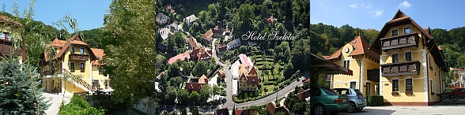
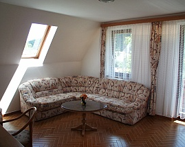
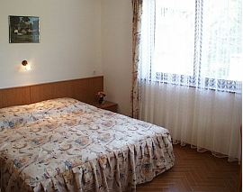

Hotel festői környezetben
Hotelünk a Bükki Nemzeti Park területén, Lillafüred közelében, Miskolc-Alsóhámorban található.
A szálloda két épületből és egy különálló recepcióból áll, melyet körbe ölel a Szinva patak halk csobogása, a Bükk friss levegője és az erdő. Rendelkezünk részben fedett – autóbuszok fogadására is alkalmas – parkolóval, illetve tágas pihenőkerttel, ahol több lehetőség közül választhatnak a mozgás szerelmesei, valamint játszóterünk várja a gyermekeket.
Ideális hely a természetet kedvelőknek, mert a közelünkben számos nevezetesség és látnivaló található, mit például a Lillafüredi Erdei vasút, Szeleta barlang, Szt.István Cseppkőbarlang, Hámori tó, Szinva Patak vízesés (szokás lillafüredi vízesésnek is hívni), lillafüredi pisztrángos, Miskolci Állatkert, melyek akár gyalogtúrával is megközelíthetőek. A tapolcai Barlangfürdő, a Diósgyőri Vár, a bánkúti sícentrum és egyéb nevezetességek rövid autózással, vagy akár tömegközlekedéssel is elérhetőek. A Miskolcra látogató üzletemberek számára is felüdülést, felfrissülést ad a néhány természetben eltöltött óra.
Napközben az étkezni kívánó vendégeket közvetlenül a szálloda mellett, illetve a közelben, több jó hírű vendéglő várja, melyek SZÉP kártyát is elfogadnak. Az alig 1 km-re fekvő Lillafüreden pedig további büfé jellegű szolgáltatás is található.
A szálloda 3 lakosztállyal, valamint 22 kétágyas szobával rendelkezik
A lakosztályba belépve egy csigalépcső vezet fel az előszobába, melyből nyílik a nappali (erkéllyel), a hálószoba, illetve a fürdőszoba. A nappali szoba egy nagy mérető sarokülővel, beépített bútorokkal, asztallal, székkel, puffokkal, fotelággyal, állóventilátorral, TV-el, telefonnal, minibárral van felszerelve. A hálóban összetolt ágyak, beépített bútorok, íróasztal, szék, TV található. A fürdőszoba zuhanykabinnal, WC-el ellátott. Amennyiben kettőnél többen érkeznek, úgy lakosztályt szoktuk ajánlani, mert tágasabb és lehetőség van a sarokülőt akár 2 fő részére is fekhellyé alakítani, illetve további 1 főt tudunk elhelyezni a fotelágyon. Babaágyat természetesen térítésmentesen biztosítunk.
 A kétágyas szobáink előszobából, fürdőszobából és hálószobából állnak. A szobákban összetolt ágyak, beépített bútorok, íróasztal, szék, állóventilátor, TV, minibár, telefon, zuhanykabinnal, WC-vel ellátott fürdőszoba várja a vendégeket. Részben erkélyesek, és többségükben biztosított a WiFi Internet hálózat is.
A szobákat 14:00 órától lehet elfoglalni és 10:00 óráig kell elhagyni.
Felhívjuk kedves vendégeink figyelmét, hogy 1 szobafoglaláshoz – a Hotel Szeleta előzetes engedélyének a hiányában – maximum 1 személygépkocsi vagy 2 motorkerékpár részére tudunk díjmentes parkolást biztosítani a Hotel területén. Autóbusz, illetve mikrobusz részére kizárólag előzetes megállapodást követően tudunk parkolást biztosítani.